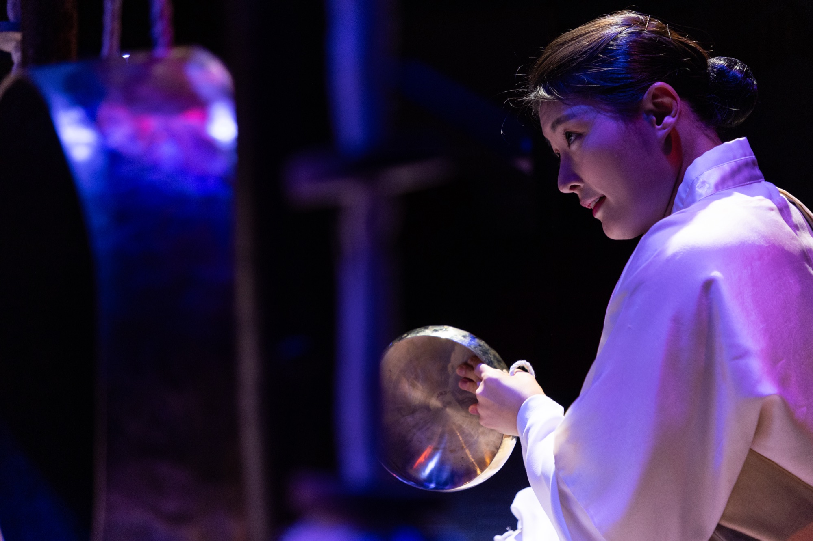
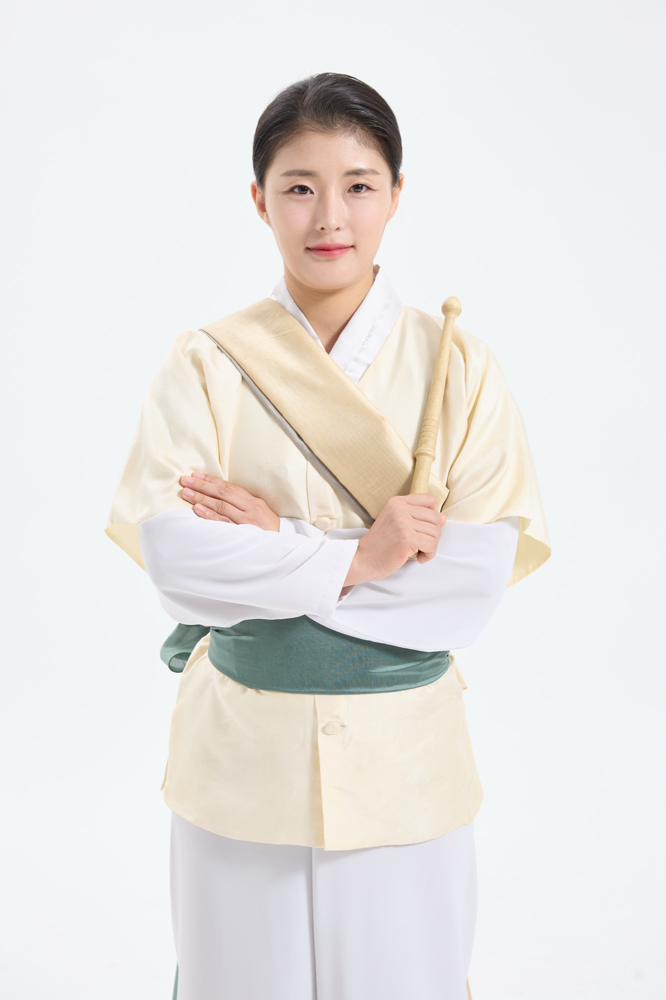
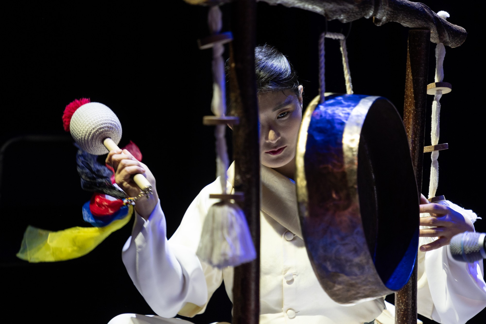
Contact: jsh3939@naver.com
Tel: +82 10 4087 6869
Instagram: sogo_sister
Artist
Profile
정서희는 한국예술종합학교에서 전통연희를 전공하고, 한양대학교 교육대학원에서 음악교육을 전공한 전통연희 실연자이자 예술교육가이다.
전통연희의 현장성과 판의 생명력을 기반으로 오랜 시간 전통 타악과 연희를 수련해 왔으며, 현장에서 축적한 실연 경험과 음악교육학적 방법론을 바탕으로 전통예술의 실연·교육·전승을 함께 실천하고 있다.
천안시립예술단 풍물단 연주자를 시작으로 남동구립예술단 훈련장, 연수구립전통예술단 연주자로 활동하며 공공예술단체의 전문 실연과 지도 경험을 쌓아왔다. 또한 일통고법보존회, 호남여성농악보존회, 남사당놀이보존회의 전수자로서 전통 타악과 농악, 전통연희의 원형을 배우고 익히며 전승의 과정에도 꾸준히 참여하고 있다.
학생 시절부터 전국 규모의 경연대회에서 대통령상과 장관상을 비롯한 주요 수상 실적을 쌓았으며, 이후 전문 연희자로서 국립국악원 예악당, 국립극장, 국립민속국악원, 국립부산국악원 등 국내 주요 무대와 홍콩·미국 등 해외 무대에서 활동해 왔다.
정서희는 전통을 단순히 재현하는 데 머무르지 않는다. 전통연희가 가진 장단과 호흡, 신체 언어, 현장성과 공동체적 에너지를 오늘의 무대와 관객에게 어떻게 전달하고 확장할 수 있는지를 지속적으로 탐구하며, 전통을 살아 있는 예술로 이어가는 연희자의 역할을 고민하고 있다.
Artist
Statement
몸으로 익힌 전통,
오늘의 판으로 이어가다
정서희에게 전통연희는 악보나 기록만으로 완성되는 예술이 아니다.
사람과 사람이 함께 호흡하고, 몸과 소리가 만나며, 그 순간의 에너지와 관계 속에서 비로소 완성되는 살아 있는 예술이다.
전통연희를 배우는 과정에서 장단의 구조와 소리의 원리를 익히는 것뿐만 아니라, 몸의 움직임과 호흡, 공간을 사용하는 방식, 연희자와 관객 사이에서 형성되는 관계까지 경험해 왔다.
특히 사물놀이와 농악, 판굿, 설장구, 소고춤 등 다양한 전통연희의 실연 경험을 통해 전통예술의 본질은 정해진 형식을 반복하는 데 있는 것이 아니라, 전통의 구조와 정신을 바탕으로 매 순간 새롭게 살아 움직이는 데 있음을 배워왔다.
한편 음악교육을 전공하며 전통 장단과 연희를 보다 체계적으로 바라보고, 이를 학습자의 수준과 목적에 맞게 전달하는 방법을 함께 연구해 왔다.
이러한 경험은 정서희의 예술 활동을 실연에만 머무르지 않게 한다.
전통을 깊이 있게 배우고, 몸으로 익히고, 무대에서 실천하며, 다시 다음 세대에 전달하는 것.
정서희는 그 과정 속에서 전통연희의 본질을 지키면서도 오늘의 관객과 소통할 수 있는 새로운 표현과 가능성을 꾸준히 탐구하고 있다.
전통을 깊이 있게 배우고, 몸으로 익히고, 무대에서 실천하며, 다시 다음 세대에 전달하는 것.
정서희의 예술 활동은 이러한 순환 속에서 이어지고 있다.
ARTISTIC IDENTITY
전통을 깊이 있게 수련하고, 동시대의 무대로 확장하는 연희 예술가
TRADITION
전통의 원형과 장단의 구조를 배우고 익히며 전통연희의 본질과 가치를 이어간다.
PERFORMANCE
판굿과 사물놀이, 설장구, 농악, 소고춤 등을 중심으로 전통연희 특유의 역동적인 움직임과 소리, 호흡과 에너지를 무대 위에서 구현한다.
EDUCATION
현장에서 축적한 실연 경험과 음악교육학적 지식을 바탕으로 전통예술의 구조와 원리를 체계적으로 전달하고, 학습자의 수준과 목적에 맞는 교육 방법을 고민한다.
TRANSMISSION
일통고법보존회, 호남여성농악보존회, 남사당놀이보존회의 전수 과정에 참여하며 전통연희의 원형을 직접 배우고 익히고, 전승의 과정 속에서 전통의 가치를 지속적으로 탐구한다.
EXPANSION
국내외 다양한 예술가 및 예술기관과의 협업과 공연 경험을 바탕으로 전통연희가 새로운 공간과 장르, 새로운 관객과 만날 수 있는 가능성을 탐구한다.
Artistic Capability
주요 실연 분야
- 판굿
- 채상 · 부포
- 사물놀이
- 삼도사물놀이
- 장구
- 삼도설장구
- 농악
- 웃다리풍물 · 호남여성농악
- 춤·연희
- 소고춤
전문 역량
- 전통연희 및 전통 타악 실연
- 전통 장단 및 연희 구조 분석
- 판굿·사물놀이·농악 등 전통연희 실기
- 전통연희 실기 지도
- 단계별 예술교육 설계
- 국내외 협업 및 초청공연
- 전통과 현대 음악의 융합 무대
Education & Qualification
Education
- 한국예술종합학교
- 전통연희 전공 학사 졸업
- 한양대학교 교육대학원
- 음악교육 전공 석사 이수
Qualification
- 문화예술교육사 2급
- 문화체육관광부
- 중등학교 정교사 2급 음악
- 교육부 · 한양대학교
Professional Career
- 연수구립전통예술단
- 연주자 | 2026–현재
- 남동구립예술단
- 훈련장 | 2023–현재
- 호남여성농악보존회
- 전수자 | 2023–현재
- 남사당놀이보존회
- 전수자 | 2025–현재
- 일통고법보존회
- 전수자 | 2012–현재
- 천안시립예술단 풍물단
- 연주자 | 2011–2012
Awards
- 2026
- 제16회 농화전국국악경연대회 일반부 대상
- 2022
- 문화체육관광부 장관상 수상
- 2016
- 강릉단오제 사물놀이 경연대회 전문인부 은상
- 2014
- 전주대사습놀이 전국대회 농악부문 장원
- 2010
- 제17회 전국 청소년 민속예술제 대통령상
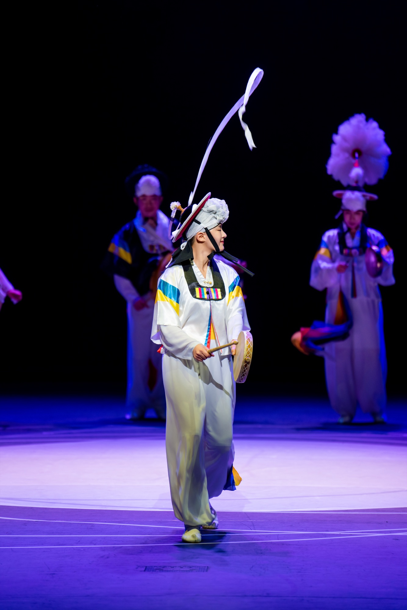
- 2025
- 〈농악 삼.셋.판〉 | 구리아트홀 코스모스대극장
- 국립민속국악원 연희부 정기공연 〈유랑의 꽃〉 | 국립민속국악원
- 2024
- 〈도리 창단 10주년 기념 사물놀이 완판〉 단독공연 | 국립국악원 예악당
- 2023
- 홍콩 차이니즈 오케스트라 × 도리 협주곡 마당 | 홍콩
- 미국 휴스턴 아시아 소사이어티 초청 공연 | 미국 휴스턴
- 여우락 페스티벌 〈여우락 홈커밍〉 | 국립극장
- 〈추갱지르당〉 | 국립극장 하늘극장
- 대한민국 전통문화대축제 여성연희 올스타전 | 대한민국 전통문화대축제
- 국립부산국악원 연희부 정기공연 〈왔구나 연희야〉 | 국립부산국악원
Representative
Performances
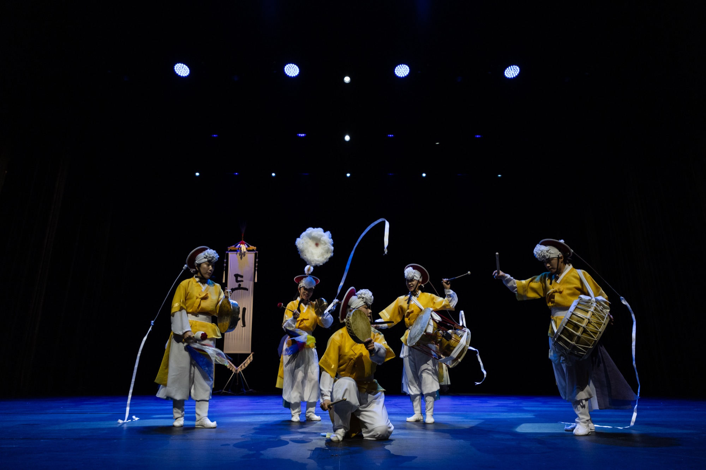
국립국악원 예악당
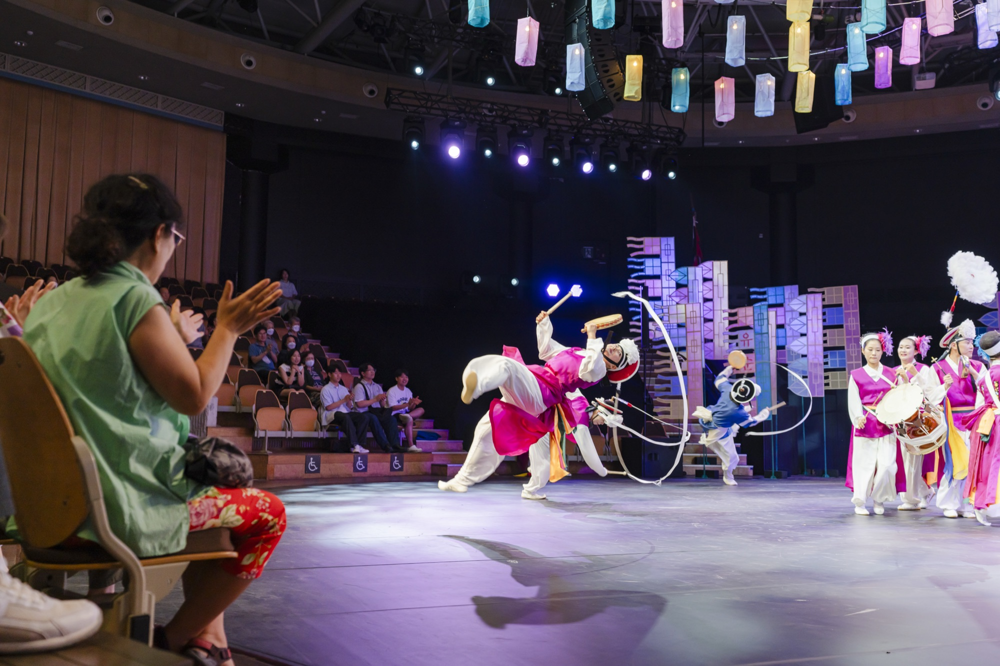
국립극장
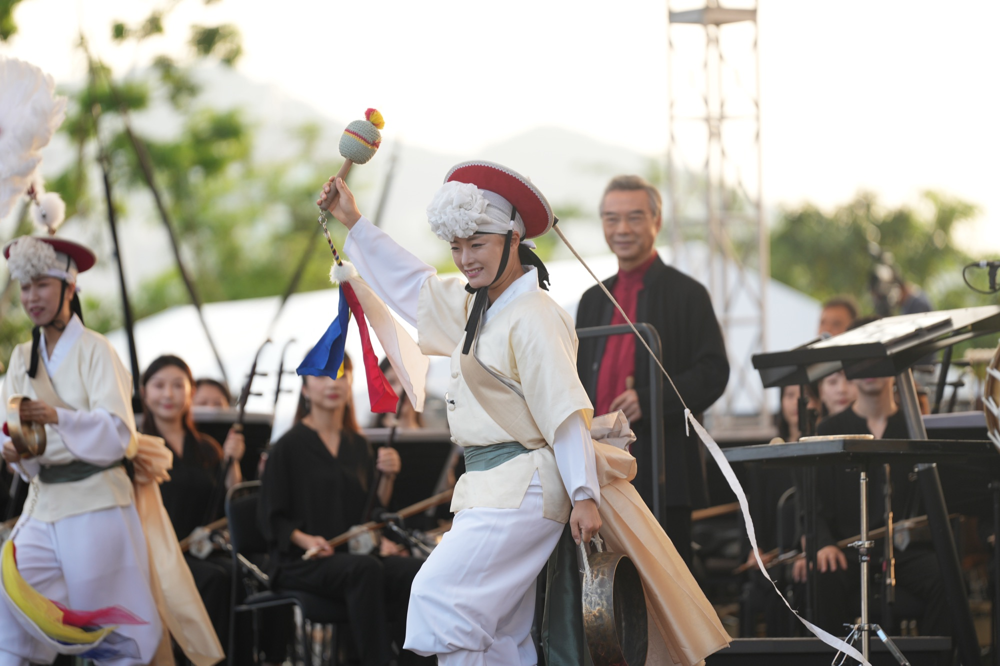
홍콩
International &
Collaborative
Performance
정서희는 전통연희를 기반으로 다양한 예술가 및 예술기관과의 협업을 이어오며 전통예술의 표현 영역을 확장해 왔다.
홍콩 차이니즈 오케스트라와의 협연을 비롯하여 미국 휴스턴 아시아 소사이어티 초청 공연 등 해외 무대에서 전통연희의 역동적인 소리와 움직임을 선보였다.
또한 국립극장 여우락 페스티벌을 비롯하여 국립국악원, 국립민속국악원, 국립부산국악원 등 다양한 공연 환경에서 활동하며 전통연희가 서로 다른 공간과 장르, 관객과 만나는 가능성을 경험해 왔다.
정서희는 전통예술이 특정한 형식과 공간에 머무르지 않고 새로운 예술적 관계를 만들어낼 수 있도록, 다양한 협업과 무대 환경에 유연하게 대응하는 연희자로서 활동하고 있다.
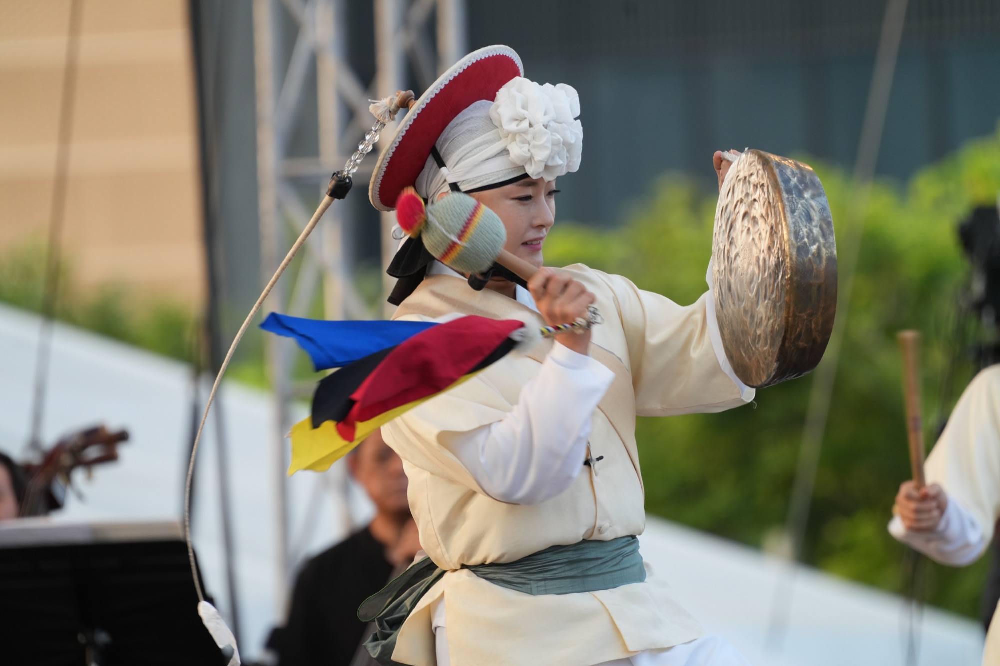
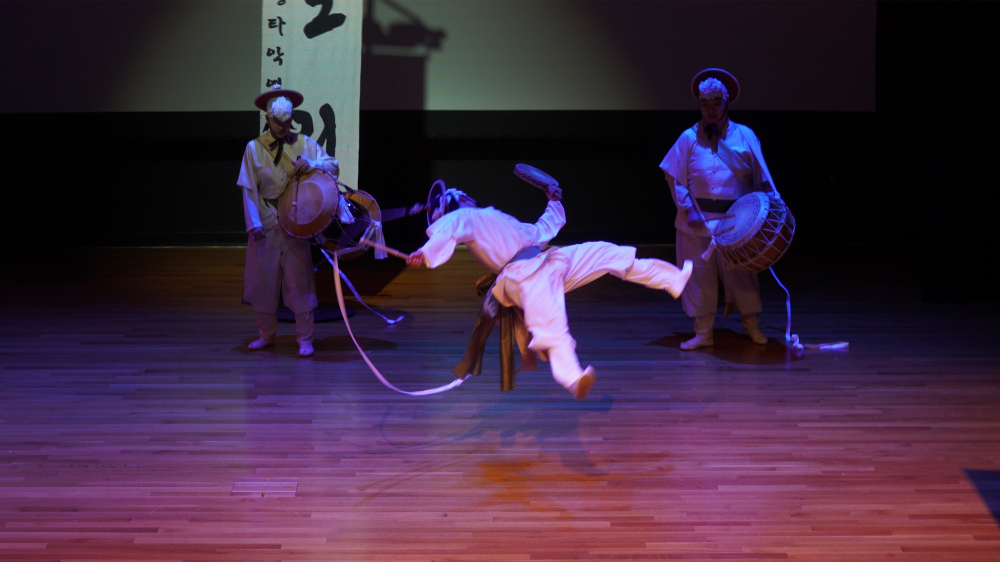
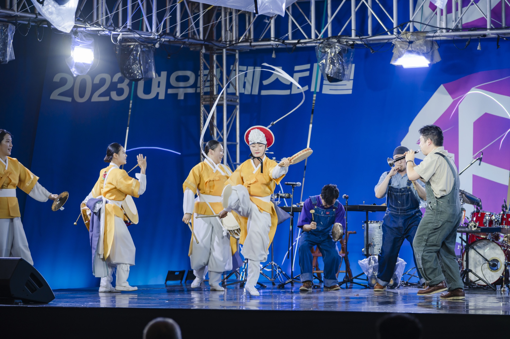
ARTISTIC ACTIVITIES
PERFORMANCE · 실연
전통연희와 타악을 중심으로 판굿, 삼도사물놀이, 삼도설장구, 웃다리풍물, 호남여성농악, 소고춤 등 다양한 레퍼토리를 실연하며 국내외 공연장에서 활동하고 있다.
EDUCATION · 예술교육
문화예술교육사 2급과 중등학교 정교사 2급 음악 자격을 바탕으로 전통 장단과 연희의 구조를 체계적으로 분석하고, 학습자의 수준과 목적에 따른 단계별 예술교육을 설계하고 있다.
TRANSMISSION · 전승
일통고법보존회, 호남여성농악보존회, 남사당놀이보존회 전수자로서 전통 타악과 농악, 전통연희의 원형을 배우고 익히며 전통예술의 지속적인 전승과 발전에 참여하고 있다.
ARTIST KEYWORDS
전통연희 · 사물놀이 · 농악 · 타악 · 장단 · 판굿 · 소고춤 · 예술교육 · 전승 · 동시대적 확장
Archive
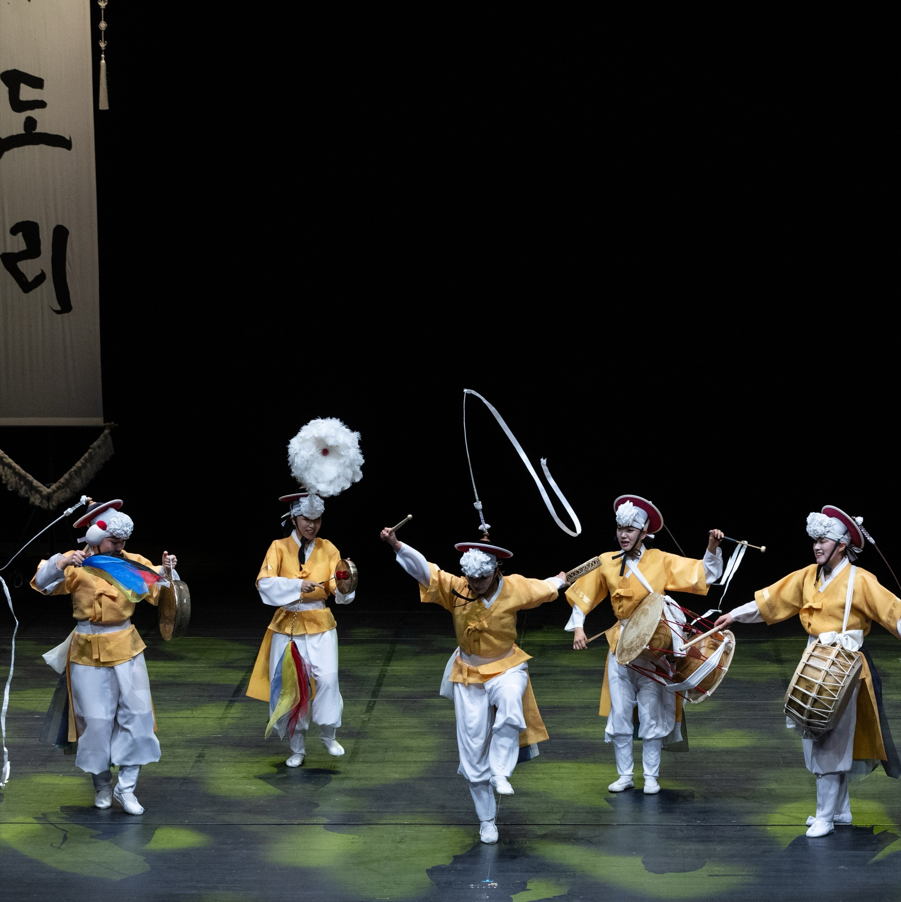
Performance
국내외 주요 공연 및 무대 활동
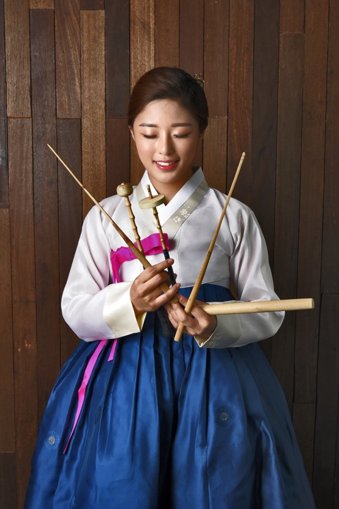
Education
전통연희 및 타악 교육 활동
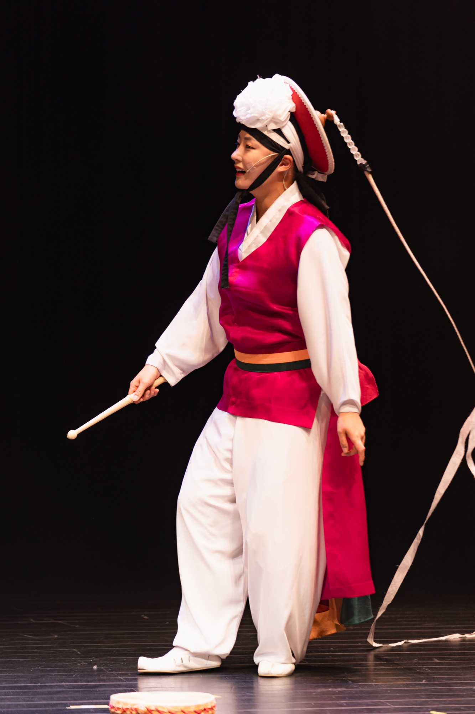
Tradition
보존회 전수 및 전통예술 활동
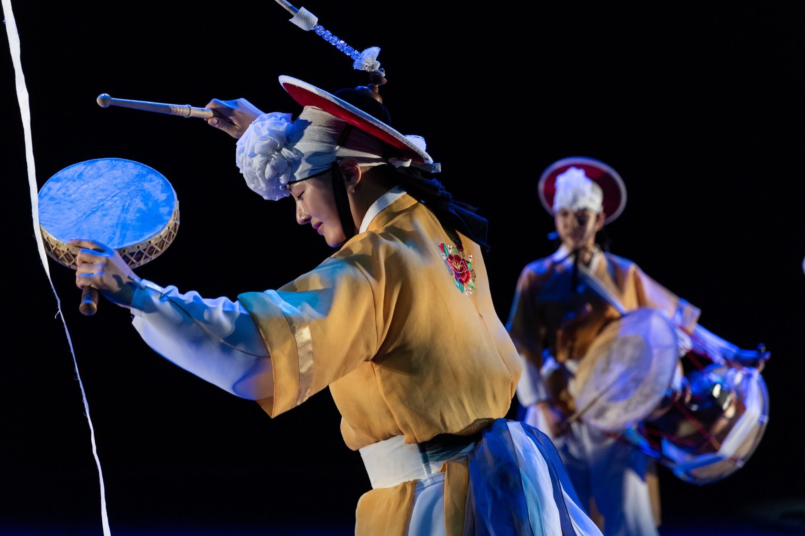
Awards
주요 경연대회 및 수상 기록
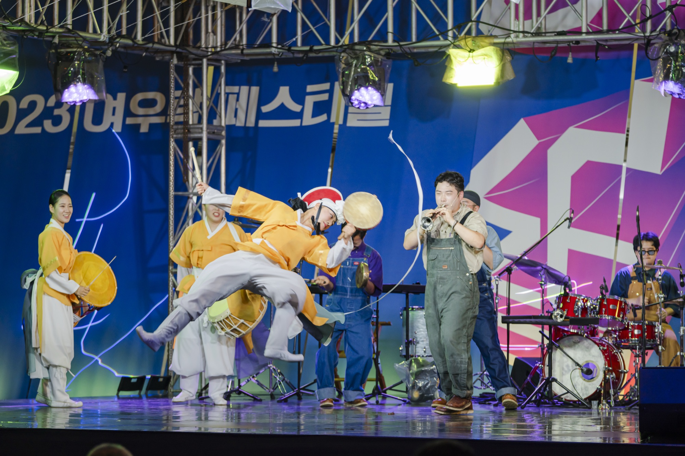
International
해외 초청 및 협업 공연

Media
방송 및 영상 기록